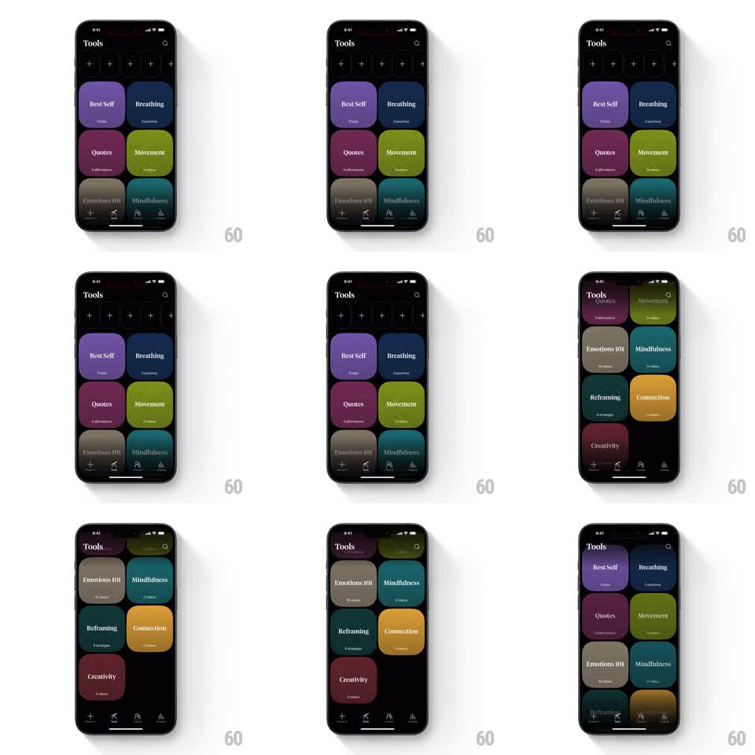

Media
Frame-by-frame

Rebuild this interaction 1:1: How We Feel's tools grid scroll - a two-column wall of rounded, jewel-toned cards that scrolls vertically with smooth inertial motion and soft row stagger.

Rebuild this interaction 1:1: How We Feel's tools grid scroll - a two-column wall of rounded, jewel-toned cards that scrolls vertically with smooth inertial motion and soft row stagger. ## Integration Integration: stack-agnostic spec - springs given as stiffness/damping, timed motions as duration + curve; map every value to your framework and animation library of choice. ## Scene Black "Tools" screen: title and search icon at top, a row of small dark "+" quick-action slots, then a 2-column grid of large rounded-square cards, each a saturated color with a centered name and small sub-line - Best Self (purple), Breathing (navy), Quotes (magenta), Movement (olive), Emotions 101 (tan), Mindfulness (teal), Reframing (dark teal), Connection (orange), Creativity (red). A dark tab bar sits at the bottom. ## Motion spec Pattern: inertial vertical scroll with row-couple lag. - The grid scrolls vertically with touch 1:1, then standard inertial decay on release (iOS-style, ~0.95 damping per frame equivalent). - The two cards in a row move as one, but successive rows lag slightly on fast flings (each row delayed ~16ms behind the row above during acceleration), giving the wall a soft fabric feel; rows catch up as the scroll settles. - Rubber-band at both ends: top overscroll stretches the title area, bottom overscroll compresses the last row toward the tab bar. - Cards do not parallax, fade, or scale during normal scroll - color and shape stay flat and still; the motion lives entirely in the scroll physics. ## Calibration - The row lag is subtle (max ~8px offset between adjacent rows at full fling speed). More reads as a bug. - No scroll snapping - the grid rests anywhere. ## Reduced motion Standard scroll without row lag; rubber-banding off. ## Don't miss - Card corner radius is large (~28px) and consistent across all cards. - The grid scrolls under the fixed title/search header and tab bar; only the "+" row scrolls with the cards.